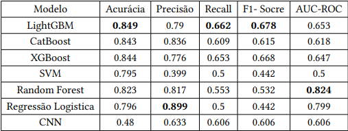

Machine LearningPredição de Doenças Crônicas com ML
Pipeline completo de ciência de dados para predição de doenças crônicas em idosos. Comparei 6 algoritmos de classificação — LightGBM, CatBoost, XGBoost, Random Forest, SVM e Regressão Logística — com avaliação por acurácia, F1-score e AUC-ROC. O modelo final atingiu 91% de AUC-ROC, demonstrando potencial para apoio clínico em triagem preventiva.
- Python
- Pandas
- scikit-learn
- LightGBM
- XGBoost
- Matplotlib